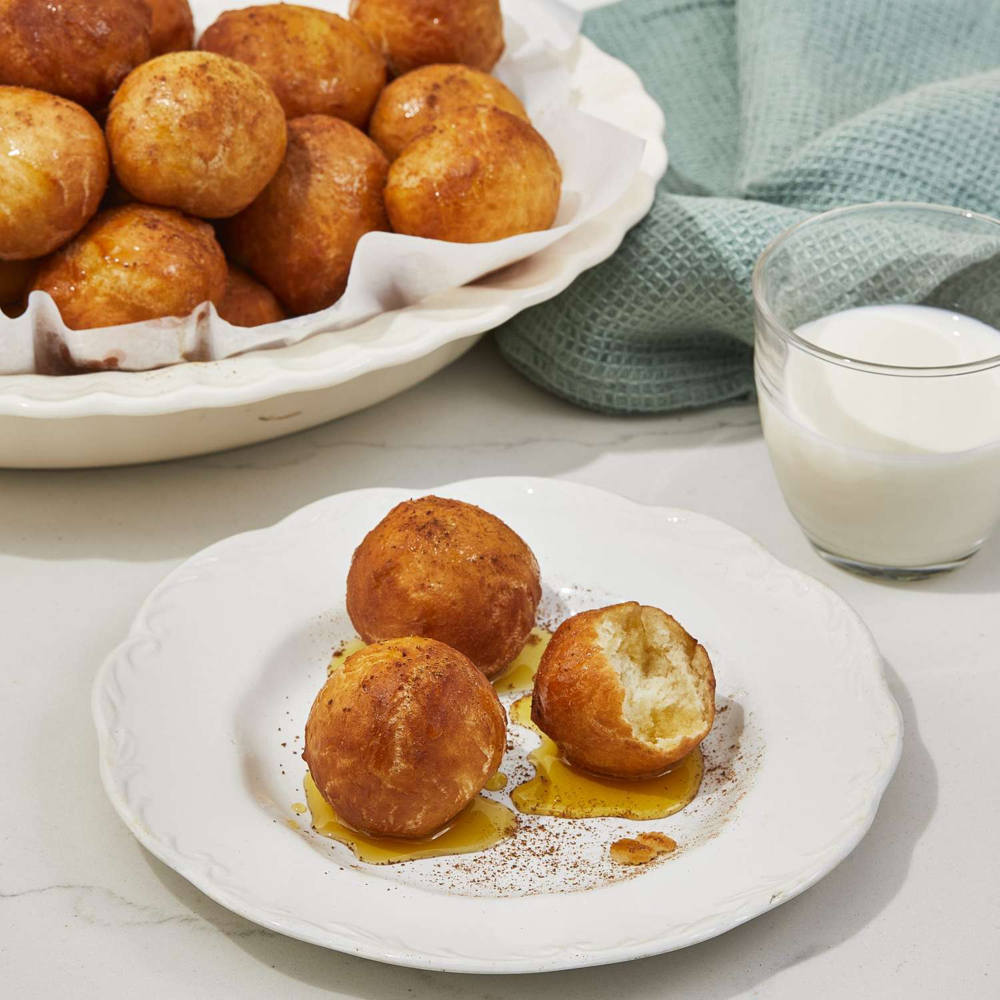

Loukoumades

Description
Fried Greek honey puffs.
Ingredients
- 2 (.25 ounce) packages active dry yeast
- 1 cup warm water
- ½ cup warm milk
- ¼ cup white sugar
- 1 teaspoon salt
- ⅓ cup butter, softened
- 3 eggs
- 4 cups all-purpose flour
- ½ cup honey
- ½ cup water
- 4 cups vegetable oil, or as needed
- 2 teaspoons ground cinnamon
Steps
- Sprinkle the yeast over the warm water in a small bowl.
The water should be no more than 100 degrees F (40 degrees C).
Let stand for 5 minutes until the yeast softens and begins to form a creamy foam.
In a large bowl, mix the warm milk, sugar, and salt, and mix to dissolve.
Pour the yeast mixture into the milk mixture, and stir to combine
- Beat in the butter, eggs, and flour until the mixture forms a smooth, soft dough.
Cover the bowl, and let rise until doubled in bulk, about 30 minutes.
Stir the dough well, cover, and let rise 30 more minutes.
- Mix honey and 1/2 cup of water in a saucepan, and bring to a boil over medium-high heat.
Turn off the heat and let the honey syrup cool.
- Heat oil in a deep-fryer or large saucepan to 350 degrees F (175 degrees C).
Oil should be about 2 inches deep.
- Place a large table or soup spoon in a glass of water near the batter.
Scoop up about 2 tablespoons of dough per puff with the wet spoon,
drop it into the wet palm of your hand, and roll it back into the spoon to create a round shape.
Do not overhandle the puffy, soft dough. Drop the dough balls into the hot oil in batches,
wetting the spoon each time you make a dough ball. Fry in the hot oil until golden brown
on the bottom, and roll them over to cook the other side, 2 to 3 minutes per batch.
Gently set the loukoumades aside to drain on paper towels.
- Place the loukoumades on a baking sheet, drizzle them with honey syrup,
and sprinkle with cinnamon. Serve warm.
Return to main page